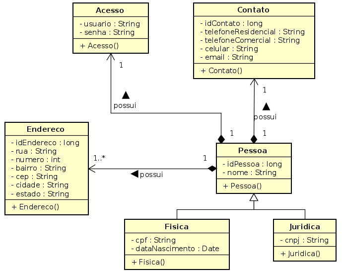
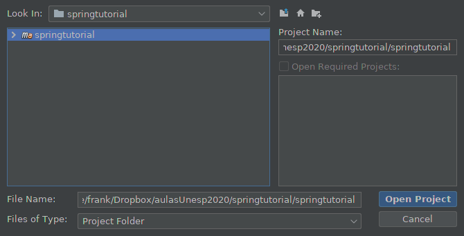
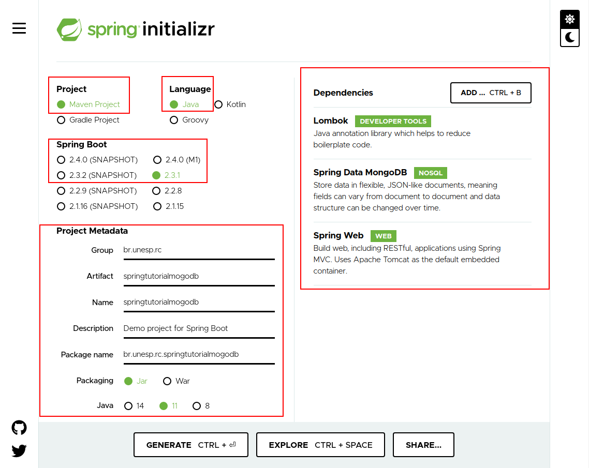

Desenvolvendo aplicações Java com Spring Data (JPA e MongoDB)
GRUPO: 0
- Frank José Affonso
- José Affonso
- José Frank
Pré-requisitos
Objetivo
O objetivo principal deste tutorial é apresentar aos alunos do BCC Unesp (Integral e Noturno) como o Framework Spring pode ser utilizado na construção de aplicações que envolvem bases de dados relacionais e NoSQL. Como objetivo secundário, porém não menos importante, este tutorial visa auxiliar os alunos de ambas as turmas na elaboração desse tipo de documento (TUTORIAL).
Falando um pouco do Spring
O que é Spring?
Em poucas palavras, Spring é um framework abrangente que fornece um modelo de programação e configuração para aplicativos corporativos modernos baseados em Java. Um elemento importante desse framework é o suporte de infraestrutura no nível do aplicativo, pois o Spring se concentra no “encanamento” das aplicações corporativas, abstraindo, automatizado e facilitando o de desenvolvimento de tais aplicações. Dessa forma, as equipes de desenvolvimento podem “canalizar” seus esforços na lógica de negócios. Maiores detalhes podem ser obtidos em Spring Framework.
Dentre os projetos existentes no ecossistema Spring, este tutorial abordará o Spring Data. O principal objetivo deste projeto é fornecer um modelo de programação baseado em Spring que permite o acesso a dados, mantendo as características especiais do armazenamento de dados subjacente. O Spring Data facilita o uso de tecnologias de acesso a dados, bancos de dados relacionais e não relacionais, estruturas de redução de mapas e serviços de dados baseados em nuvem. Dentre os módulos existentes, este tutorial abordará dois, a saber:
- Spring Data JPA: este módulo permite o desenvolvimento para camadas de acesso a dados baseadas em JPA, abstraindo e facilitando a codificação dessa camada. Dessa forma, pode-se dizer que esse módulo facilita a criação de aplicativos com tecnologia Spring que usam tecnologias de acesso a dados para banco de dados relacionais.
- Spring Data MongoDB: este módulo fornece integração com o banco de dados de documentos MongoDB. Resumidamente, as principais funcionalidades do Spring Data MongoDB podem ser sintetizadas no modelo POJO (do inglês, Plain Old Java Object), o qual é utilizado para interagir com um MongoDB DBCollection e permitir a camada de acesso a dados no estilo Repositório seja elaborada.
Apresentando o Exemplo
Para mostrar a funcionalidade do framewok Spring Data tanto para JPA quanto para MongoDB, o exemplo utilizado no TUTORIAL JDBC (AQUI) será utilizado. Veja a especificação abaixo:
O sistema deve permitir a inclusão, alteração e remoção de clientes do sistema TUTORIAL-COM-JDBC com os seguintes atributos: nome, endereço (rua, número, bairro, cep, cidade, estado), contato (telefone residencial, telefone comercial, celular, e-mail), cpf (para pessoa física), data de nascimento e cnpj (para pessoa jurídica). Um cliente pode ter mais de um endereço para correspondência. Um cliente tem apenas um contato.
Com base na especificação apresentada, o seguinte diagrama de classes foi elaborado:
Embora o framework automatize a modelagem do banco de dados relacional, os conceitos apresentados nas VIDEOAULAS 4 e 5 serão utilizados para entender como ocorrer o mapeamento o modelo de classe para o modelo relacional por meio de anotações.
Para desenvolver o exemplo apresentado, este tutorial será apresentado em duas partes. A primeira mostra o desenvolvimento utilizando Spring Data JPA. Já a segunda mostra o desenvolvimento do mesmo exemplo utilizando Spring Data MongoDB, sendo os passos apresentados na primeira parte omitidos para evitar redundância de informações.
PARTE 1: desenvolvimento utilizando Spring Data JPA
Criando o projeto
Pelo site oficial (https://spring.io/), o Spring disponibiliza para os desenvolvedores os seguintes recursos:
- Spring Too Suite 4, uma ferramenta baseada na IDE Eclipse para desenvolvimento de aplicações baseadas em seu ecossistema.
- Spring initializr, um website (https://start.spring.io/) que permite a criação de projetos.
- NOTA. IDEs de desenvolvimento como Netbenas e IntelliJ permitem instalação de plugins para trabalhar com o framework.
Para o desenvolvimento deste tutorial, a segunda opção (Spring initializr) será utilizada. Sendo assim, acesse o website e configure um projeto como indicado na figura abaixo:

IMPORTANTE:
Observe as áreas envolvidas ou sublinhadas em vermelho. Em relação aos módulos de dependência, o Spring Boot DevTools foi selecionado para que as alterações de código sejam refletidas no projeto em execução, sem que a mesma tenha que ser reinicializada. O Lombok foi selecionado para evitar que código, como métodos de acesso, sejam escritos nas classes. O Spring Data JPA foi selecionado para trabalharmos como a persistência de dados (API JPA) no banco de dados relacional MySQL. Por esse motivo que o MySQL Driver também foi selecionado. Por fim, já pensando um pouco no futuro, o Spring Web foi selecionado para que uma API possa ser elaborada.
Implementação do exemplo
Preparação do projeto e camada entity
Para inciarmos o projeto na IDE Netbeans, os seguintes passos devem ser executados:
-
Criação de um database chamado
springtutorialjpana ferrramenta MySQL Workbench. Em caso de dúvida, assista a VÍDEO TUTORIAL que está no TÓPICO 5. -
Descompacte o arquivo
springtutorial.zipem um local de sua preferência. Em seguida, abra o projeto na IDE como indicado abaixo:
-
Agora, abra o arquivo
application.propertiesque está na pastaOther Sources. Vá navegando pelas pastas até encontrá-lo e insira as seguintes informações:spring.datasource.url=jdbc:mysql://localhost:3306/springtutorialjpa spring.datasource.username=administrator spring.datasource.password=Mysql!server.57 spring.datasource.driver-class-name=com.mysql.cj.jdbc.Driver spring.jpa.database-platform=org.hibernate.dialect.MySQL5Dialect spring.jpa.generate-ddl=true spring.jpa.hibernate.ddl-auto=update
-
Em seguida, clique no botão
Clear and Build Projectpara que o download das dependências do projeto seja realizado. Se tudo der certo, a seguinte mensagem será exibida na aba de Output da IDE.------------------------------------------------------------------------ BUILD SUCCESS ------------------------------------------------------------------------ Total time: 29.110 s Finished at: 2020-07-14T14:59:00-03:00 Final Memory: 38M/137M ------------------------------------------------------------------------
Agora vamos começar a codificação das classes do nosso exemplo, conforme exposto no modelo UML
(diagrama de classes) acima. Para isso, o framework Lombok será utilizado para
minimizar a tarefa de codificação. As classes são, geralmente, anotadas com @Getter,
@Setter, @EqualsAndHashCode, @ToString para que os métodos
getters, setter, equals,
hashCode e toString.
Veja o código da classe Acesso.java
package br.unesp.rc.springtutorial.entity; import lombok.EqualsAndHashCode; import lombok.Getter; import lombok.Setter; import lombok.ToString; /** * * @author frank */ @Getter @Setter @EqualsAndHashCode @ToString public class Acesso { private String usuario; private String senha; public Acesso() { } }
Veja o código da classe Contato.java
package br.unesp.rc.springtutorial.entity; import lombok.EqualsAndHashCode; import lombok.Getter; import lombok.Setter; import lombok.ToString; /** * * @author frank */ @Getter @Setter @EqualsAndHashCode @ToString public class Contato { private long idContato; private String telefoneResidencial; private String telefoneComercial; private String celular; private String email; public Contato() { } }
Veja o código da classe Endereco.java
package br.unesp.rc.springtutorial.entity; import lombok.EqualsAndHashCode; import lombok.Getter; import lombok.Setter; import lombok.ToString; /** * * @author frank */ @Getter @Setter @EqualsAndHashCode @ToString public class Endereco { private long idEndereco; private String rua; private int numero; private String bairro; private String cep; private String cidade; private String estado; public Endereco() { } }
Veja o código da classe Pessoa.java
package br.unesp.rc.springtutorial.entity; import java.util.ArrayList; import java.util.List; import lombok.EqualsAndHashCode; import lombok.Getter; import lombok.Setter; import lombok.ToString; /** * * @author frank */ @Getter @Setter @EqualsAndHashCode @ToString public class Pessoa { private long idPessoa; private String nome; private List<Endereco> endereco; private Acesso acesso; private Contato contato; public Pessoa() { this.endereco = new ArrayList<>(); } public void setEndereco(Endereco endereco) { this.endereco.add(endereco); } }
Veja o código da classe Fisica.java. Observe que a anotação
@EqualsAndHashCode teve o parâmetro callSuper = false
adicionado para que os atributos da superclasse Pessoa não
seja utilizado. Já a anotação @ToString teve dois parâmetros
adicionados callSuper=true, includeFieldNames=true para que o
método da superclasse seja chamado com a inclusão dos atributos.
package br.unesp.rc.springtutorial.entity; import java.util.Date; import lombok.EqualsAndHashCode; import lombok.Getter; import lombok.Setter; import lombok.ToString; /** * * @author frank */ @Getter @Setter @EqualsAndHashCode(callSuper = false, exclude = {"dataNascimento"}) @ToString(callSuper=true, includeFieldNames=true) public class Fisica extends Pessoa { private String cpf; private Date dataNascimento; public Fisica() { } }
Veja o código da classe Juridica.java
package br.unesp.rc.springtutorial.entity; import lombok.EqualsAndHashCode; import lombok.Getter; import lombok.Setter; import lombok.ToString; /** * * @author frank */ @Getter @Setter @EqualsAndHashCode(callSuper = false) @ToString(callSuper=true, includeFieldNames=true) public class Juridica extends Pessoa { private String cnpj; public Juridica() { } }
Vamos executar o projeto?
Para isso, devemos fazer algumas alterações na classe SpringtutorialApplication, a saber:
-
Fazer com que essa classe implemente a interface
CommandLineRunner. -
Rescrever o método
rundessa interface.
Veja o código da classe SpringtutorialApplication.java
package br.unesp.rc.springtutorial; import br.unesp.rc.springtutorial.entity.Fisica; import br.unesp.rc.springtutorial.utils.InstanceGenerator; import org.springframework.boot.CommandLineRunner; import org.springframework.boot.SpringApplication; import org.springframework.boot.autoconfigure.SpringBootApplication; import org.springframework.context.annotation.Bean; @SpringBootApplication public class SpringtutorialApplication implements CommandLineRunner { public static void main(String[] args) { SpringApplication.run(SpringtutorialApplication.class, args); } @Override public void run(String... args) throws Exception { Fisica entity = InstanceGenerator.getPessoaFisica("111.222.333-44", "user1"); System.out.println("\n" + entity + "\n"); } }
Veja o resultado da execução (arquivo organizado), que mostra os dados do objeto instanciado:
Fisica(
super=Pessoa(idPessoa=0, nome=Juca Chaves,
endereco=[
Endereco(idEndereco=0, rua=Avenida 24A, numero=1515, bairro=Bela Vista, cep=13506-900, cidade=Rio Claro, estado=SP),
Endereco(idEndereco=0, rua=Avenida 24A, numero=2020, bairro=Bela Vista, cep=13506-900, cidade=Rio Claro, estado=SP),
Endereco(idEndereco=0, rua=Avenida 24A, numero=3030, bairro=Bela Vista, cep=13506-900, cidade=Rio Claro, estado=SP)
],
acesso=Acesso(usuario=user1, senha=deitel),
contato=Contato(idContato=0, telefoneResidencial=3333-4444, telefoneComercial=3333-5555, celular=98888-7777,
email=juca@chaves.com.br)),
cpf=111.222.333-44, dataNascimento=Tue Jul 14 18:35:00 BRT 2020
)
Anotando as classes
Para que as classes de nosso exemplo possam ser persistidas no banco dados, anotações
JPA devem inseridas em cadas uma delas. Vale destacar que a execução desse passo
utiliza os conceitos apresentados na VIDEOULA – TÓPICO 5. Inicialmente, cada classe
será modificada para implementar a interface java.io.Serializable e
declarar o atributo serialVersionUID, conforme recomendado pela
especificação JavaBean. A classe Acesso.java foi anotada como
@Embeddable para ser tornar entidade embutida de Pessoa. Os atributos
foram anotados com @Column para que os referidos sejam inseridos na
tabela Pessoa. A listagem abaixo mostra o código da classe
Acesso.java.
package br.unesp.rc.springtutorial.entity; import java.io.Serializable; import javax.persistence.Column; import javax.persistence.Embeddable; import lombok.EqualsAndHashCode; import lombok.Getter; import lombok.Setter; import lombok.ToString; /** * * @author frank */ @Embeddable @Getter @Setter @ToString @EqualsAndHashCode public class Acesso implements Serializable{ private static final long serialVersionUID = 1L; @Column(name = "acesso_usuario") private String usuario; @Column(name = "acesso_senha") private String senha; public Acesso() { } }
A classe Contato.java foi anotada como @Entity(name = "Contato")
para definir o nome da tabela no banco de dados. O atributo idContato foi
anotado com @Id e @GeneratedValue(strategy = GenerationType.AUTO)
para definir que esse atributo é uma chave no banco de dados e a estratégia de incremento utilizada.
A listagem abaixo mostra o código da classe Contato.java.
package br.unesp.rc.springtutorial.entity; import java.io.Serializable; import javax.persistence.Entity; import javax.persistence.GeneratedValue; import javax.persistence.GenerationType; import javax.persistence.Id; import lombok.EqualsAndHashCode; import lombok.Getter; import lombok.Setter; import lombok.ToString; /** * * @author frank */ @Entity(name = "Contato") @Getter @Setter @ToString @EqualsAndHashCode public class Contato implements Serializable { private static final long serialVersionUID = 1L; @Id @GeneratedValue(strategy = GenerationType.AUTO) private long idContato; private String telefoneResidencial; private String telefoneComercial; private String celular; private String email; public Contato() { } }
Analogamente, a classe Endereco.java foi anotada com as mesmas anotações
de Contato.java. Veja a listagem abaixo:
package br.unesp.rc.springtutorial.entity; import java.io.Serializable; import javax.persistence.Entity; import javax.persistence.GeneratedValue; import javax.persistence.GenerationType; import javax.persistence.Id; import lombok.EqualsAndHashCode; import lombok.Getter; import lombok.Setter; import lombok.ToString; /** * * @author frank */ @Entity(name = "Endereco") @Getter @Setter @ToString @EqualsAndHashCode public class Endereco implements Serializable { private static final long serialVersionUID = 1L; @Id @GeneratedValue(strategy = GenerationType.AUTO) private long idEndereco; private String rua; private int numero; private String bairro; private String cep; private String cidade; private String estado; public Endereco() { } }
As classes de nível de hierarquia inferior, Fisica.java e Juridica.java,
foram anotadas com @Entity e @Table. Observe que esta última define os
nomes das tabelas no banco de dados (name = "PessoaFisica" e name = "PessoaJuridica")
e as restrições de unicidade para os campos cpf e cnpj. Dessa forma, objetos de mesmo
cpf ou cnpj não poderão ser persistido no banco de dados. A listagem abaixo mostra o código da classe
Fisca.java.
package br.unesp.rc.springtutorial.entity; import java.util.Date; import javax.persistence.Entity; import javax.persistence.Table; import javax.persistence.Temporal; import javax.persistence.TemporalType; import javax.persistence.UniqueConstraint; import lombok.EqualsAndHashCode; import lombok.Getter; import lombok.Setter; import lombok.ToString; /** * * @author frank */ @Entity @Table( name = "PessoaFisica", uniqueConstraints = @UniqueConstraint( name = "unique_cpf", columnNames = { "cpf" } ) ) @Getter @Setter @EqualsAndHashCode(callSuper = false, exclude = {"dataNascimento"}) @ToString(callSuper = true, includeFieldNames = true) public class Fisica extends Pessoa { private static final long serialVersionUID = 1L; private String cpf; @Temporal(TemporalType.TIMESTAMP) private Date dataNascimento; public Fisica() { } }
A listagem abaixo mostra o código da classe Juridica.java.
package br.unesp.rc.springtutorial.entity; import javax.persistence.Entity; import javax.persistence.Table; import javax.persistence.UniqueConstraint; import lombok.EqualsAndHashCode; import lombok.Getter; import lombok.Setter; import lombok.ToString; /** * * @author frank */ @Entity @Table( name = "PessoaJuridica", uniqueConstraints = @UniqueConstraint( name = "unique_cnpj", columnNames = { "cnpj" } ) ) @Getter @Setter @EqualsAndHashCode(callSuper = false) @ToString(callSuper = true, includeFieldNames = true) public class Juridica extends Pessoa { private static final long serialVersionUID = 1L; private String cnpj; public Juridica() { } }
Por fim, chegamos na classe mais “importante” do nosso exemplo, pelos atributos de
relacionamento nela contidos. O atributo endereco foi anotado duas
anotações, a saber:
-
OneToMany, como o nome diz, faz o mapeamento de um para muito.-
O significado de
CascadeType.ALLé que a persistência deve ser propagada em cascata em todas as operações do EntityManager (PERSIST, REMOVE, REFRESH, MERGE, DETACH) e entidades relacionadas. -
O significado de
orphanRemoval = trueé que as entidades do relacionamento que ficaram soltas, quando a entidade detentora é excluída, devem ser excluídas. -
O significado de
fetch = FetchType.EAGERé que o carregamento das entidades deve ser realizado, mesmo que estas não forem utilizadas.
-
O significado de
-
@JoinColumn, indica o nome do atributo de relacionamento (chave estrangeira) na tabela que possui o relacionamento muitos.
O atributo contato foi anotado duas anotações, a saber:
-
OneToOne, como o nome diz, faz o mapeamento de um para um. -
@JoinColumn, indica o nome do atributo de relacionamento na tabela que representa a classe (entidade) em que ocorreu a anotação.
package br.unesp.rc.springtutorial.entity; import java.io.Serializable; import java.util.ArrayList; import java.util.List; import javax.persistence.CascadeType; import javax.persistence.Entity; import javax.persistence.FetchType; import javax.persistence.GeneratedValue; import javax.persistence.GenerationType; import javax.persistence.Id; import javax.persistence.Inheritance; import javax.persistence.InheritanceType; import javax.persistence.JoinColumn; import javax.persistence.OneToMany; import javax.persistence.OneToOne; import lombok.EqualsAndHashCode; import lombok.Getter; import lombok.Setter; import lombok.ToString; /** * * @author frank */ @Entity(name = "Pessoa") @Inheritance(strategy = InheritanceType.JOINED) @Getter @Setter @EqualsAndHashCode @ToString public class Pessoa implements Serializable { private static final long serialVersionUID = 1L; @Id @GeneratedValue(strategy = GenerationType.AUTO) private long idPessoa; private String nome; @OneToMany( cascade = CascadeType.ALL, orphanRemoval = true, fetch = FetchType.EAGER) @JoinColumn(name = "pessoa_idpessoa") private List<Endereco> endereco; private Acesso acesso; @OneToOne(cascade = CascadeType.ALL) @JoinColumn(name = "contato_idContato") private Contato contato; public Pessoa() { this.endereco = new ArrayList<>(); } public void setEndereco(Endereco endereco) { this.endereco.add(endereco); } }
Implementando a camada repository
Uma vez que nossas classes (ou entidades) estão prontas, podemos iniciar a implementação da camada
repository. Para isso, crie um pacote de mesmo nome da camada no pacote raiz
(br.unesp.rc.springtutorial) de nosso exemplo. Em seguida, crie uma interface
chamada FisicaRepository, que deve estender a interface e indicar o tipo de
objeto que manipula e o tipo de chave (JpaRepository<Fisica, Long>). A listagem
abaixo mostra o código fonte do repositório criado.
package br.unesp.rc.springtutorial.repository; import br.unesp.rc.springtutorial.entity.Fisica; import org.springframework.data.jpa.repository.JpaRepository; /** * * @author frank */ public interface FisicaRepository extends JpaRepository<Fisica, Long> { Fisica findByCpf(String cpf); }
Observe que apenas uma assinatura foi elaborada! Vale ressaltar que essa assinatura segue o padrão do framework (find + By + NOME-DO-CAMPO).
Vamos executar o projeto para ver o que acontece?
Se fizermos isso, o Spring Data JPA irá criar as tabelas no banco de dados, conforme figura abaixo.
Observe também que a uma sequence chamada hibernate_sequence foi criada para gerenciar
os identificadores dos objetos (@GeneratedValue(strategy = GenerationType.AUTO)).
Implementando a camada service
Agora vamos iniciar a implementação da camada service. Para isso, vamos criar
um pacote de mesmo nome da camada no pacote raiz (br.unesp.rc.springtutorial).
Em seguida, crie uma classe chamada FisicaService para abstrair as operações
do repositório. A listagem abaixo mostra o código fonte dessa classe.
package br.unesp.rc.springtutorial.service; import br.unesp.rc.springtutorial.entity.Fisica; import br.unesp.rc.springtutorial.repository.FisicaRepository; import org.springframework.beans.factory.annotation.Autowired; import org.springframework.stereotype.Component; /** * * @author frank */ @Component public class FisicaService { @Autowired private FisicaRepository repository; public FisicaService() { } public Fisica save(Fisica entity) { Fisica persistedEntity = null; if (repository != null) { persistedEntity = repository.save(entity); } return persistedEntity; } public Fisica findByCpf(String cpf) { Fisica insertedEntity = null; if (repository != null) { insertedEntity = repository.findByCpf(cpf); } return insertedEntity; } public void delete(Fisica entity) { if (repository != null) { repository.delete(entity); } } public Fisica update(Fisica entity) { Fisica persistedEntity = null; if (repository != null) { persistedEntity = repository.save(entity); } return persistedEntity; } public List<Fisica> findAll() { List<Fisica> list = null; if (repository != null) { list = new ArrayList<>(); list = repository.findAll(); } return list; } }
Analisando essa classe, duas anotações podem ser detalhadas
-
@Component, esta anotação serve para indicar ao framework que classe é um bean que deverá ser gerenciado pela implementação de IoC (do inglês, Inversion of Control) Container do Spring. -
@Autowired, esta anotação indica ao framework que o atributo foi injetado na classe e deve ser gerenciado por ele.
Por fim, vale destacar que o desenvolvimento dessa camada mostra que os métodos fornecidos pelo repositório foram utilizados.
Escrevendo os casos de teste
Vamos gerar a classe de teste para a classe FisicaService. Clique no nome da
classe e navegue pelas opções: Navigate -> Go to test/Tested class ou pelo
atalho Ctrl+Alt+T. Aceite as opções apresentadas e clique em OK. Altere o corpo
dos métodos de teste conforme mostra a listagem abaixo:
package br.unesp.rc.springtutorial.service; import br.unesp.rc.springtutorial.entity.Fisica; import br.unesp.rc.springtutorial.utils.InstanceGenerator; import java.util.List; import org.junit.jupiter.api.Test; import static org.junit.jupiter.api.Assertions.*; import org.junit.jupiter.api.Disabled; import org.junit.jupiter.api.DisplayName; import org.springframework.beans.factory.annotation.Autowired; import org.springframework.boot.test.context.SpringBootTest; /** * * @author frank */ @SpringBootTest public class FisicaServiceTest { private Fisica entity; @Autowired private FisicaService fs = new FisicaService(); @Test @DisplayName("FisicaService.save(Fisica)") void testSave() { entity = InstanceGenerator.getPessoaFisica("222.333.444-55", "user1"); System.out.println(entity); Fisica f = fs.save(entity); System.out.println("----------------------------------------"); System.out.println(f); System.out.println("----------------------------------------"); assertEquals(entity, f); } @Test @DisplayName("FisicaService.findByCpf(cpf)") void testFindByCpf() { entity = InstanceGenerator.getPessoaFisica("222.333.444-55", "user1"); String cpf = "222.333.444-55"; Fisica f = fs.findByCpf(cpf); System.out.println("----------------------------------------"); System.out.println(f); System.out.println("----------------------------------------"); assertEquals(entity, f); } @Disabled @Test public void testDelete() { //... } @Disabled @Test public void testUpdate() { //... } @Test @DisplayName("FisicaService.findAll()") public void testFindAll() { System.out.println("findAll"); Fisica expResult = null; List<Fisica> result = fs.findAll(); assertNotEquals(expResult, result); } }
Observe que a classe FisicaServiceTest foi anotada com @SpringBootTest
para sinalizar ao framework que essa é uma classe de teste.
Utilizando a anotação @Disabled execute os testes elaborados. Para fins de ilustração, o teste
para a inserção de uma pessoa física será apresentado. Para isso, vá até a pasta de projeto Test Packages,
clique com o botão direito na classe FisicaServiceTest.java e na opção Test file. Veja o resultado
na imagem abaixo:
Olha ele aqui novamente (O iceberg)! O Spring Data JPA é um framework muito poderoso e possui vários outros recursos que não foram explorados neste tutorial. Espera-se que o conteúdo apresentado (a ponta do iceberg) possa estimular seu apresendizado e utilização em sistemas de maior escala.
PARTE 2: desenvolvimento utilizando Spring Data MongoDB
Criando o projeto
Crie um projeto para uma aplicação MongoDB, como mostra a figura abaixo:

Descompacte o projeto e abra o mesmo na IDE Netbeans. Em seguida, copie as classes do projeto
anterior springtutorial para este, respeitando a organização de pacotes apresentada
na primeira parte. Remova todas anotações JPA e ajuste a importação das bibliotecas. A figura
abaixo mostra a organização do projeto.
Para "cortar caminho", estou apresentando o conteúdo (2) do arquivo application.properties (1).
Em (3) é possível observar que o projeto foi compilado com sucesso para ajustar as dependências. Clique no
botão abaixo e à direita para fazer download do projeto como ilustrado na imagem.
Implementação do exemplo
Anotando as classes
O String Data MongoDB trabalha de maneira bem simplificada, se comparado ao Spring Data JPA. Para
persistir as classes de nosso exemplo apenas as classes Fisica.java e Juridica.java
serão anotadas com @Id. O MongoDB não trabalha com o conceito de chaves (primárias e
estrangeiras), sendo utilizados identificadores (gerenciados pelo banco de dados) de objetos para
diferenciar os objetos. A anotação supracitada permite que atributos específicos tenham comportamento
de identificadores.
Veja a listagem da classe Fisica.java:
package br.unesp.rc.springtutorialmogodb.entity; import java.util.Date; import lombok.EqualsAndHashCode; import lombok.Getter; import lombok.Setter; import lombok.ToString; import org.springframework.data.annotation.Id; /** * * @author frank */ @Getter @Setter @EqualsAndHashCode(callSuper = false, exclude = {"dataNascimento"}) @ToString(callSuper = true, includeFieldNames = true) public class Fisica extends Pessoa { @Id private String cpf; private Date dataNascimento; public Fisica() { } }
Veja a listagem da classe Juridica.java:
package br.unesp.rc.springtutorialmogodb.entity; import lombok.EqualsAndHashCode; import lombok.Getter; import lombok.Setter; import lombok.ToString; import org.springframework.data.annotation.Id; /** * * @author frank */ @Getter @Setter @EqualsAndHashCode(callSuper = false) @ToString(callSuper = true, includeFieldNames = true) public class Juridica extends Pessoa { @Id private String cnpj; public Juridica() { } }
Implementando a camada repository
De modo análogo ao Spring Data JPA, devemos criar uma interface chamada FisicaRepository.java
que deve estender a interface MongoRepository. Veja a listagem de nosso repositório com as
duas assinaturas elaboradas: findByCpf e deleteByCpf.
package br.unesp.rc.springtutorialmogodb.repository; import br.unesp.rc.springtutorialmogodb.entity.Fisica; import org.springframework.data.mongodb.repository.MongoRepository; public interface FisicaRepository extends MongoRepository<Fisica, Long> { Fisica findByCpf(String cpf); void deleteByCpf(String cpf); }
Implementando a camada service
De modo análogo ao Spring Data JPA, devemos criar uma classe chamada FisicaService.java. Essa
classe é praticamente identica a classe desenvolvida para o exemplo Spring Data JPA. As diferenças são relação
ao uso dos métodos findByCpf e deleteByCpf. Veja a listegem abaixo:
package br.unesp.rc.springtutorialmogodb.service; import br.unesp.rc.springtutorialmogodb.entity.Fisica; import br.unesp.rc.springtutorialmogodb.repository.FisicaRepository; import java.util.ArrayList; import java.util.List; import org.springframework.beans.factory.annotation.Autowired; import org.springframework.stereotype.Component; /** * * @author frank */ @Component public class FisicaService { @Autowired private FisicaRepository repository; public FisicaService() { } public Fisica save(Fisica entity) { Fisica persistedEntity = null; if (repository != null) { persistedEntity = repository.save(entity); } return persistedEntity; } public Fisica findByCpf(String cpf) { Fisica insertedEntity = null; if (repository != null) { insertedEntity = repository.findByCpf(cpf); } return insertedEntity; } public void delete(Fisica entity) { if (repository != null) { repository.deleteByCpf(entity.getCpf()); } } public Fisica update(Fisica entity) { Fisica persistedEntity = null; if (repository != null) { persistedEntity = repository.save(entity); } return persistedEntity; } public List<Fisica> findAll() { List<Fisica> list = null; if (repository != null) { list = new ArrayList<>(); list = repository.findAll(); } return list; } }
Diferentemente da implementação anterior (Spring Data JPA), nós iremos modificar a classe
SpringtutorialmogodbApplication. Para isso, essa classe deve implementar a interface
CommandLineRunner para que o método run possa ser desenvolvido. A listagem
abaixo mostra como a implementação da camada service pode ser utilizada.
package br.unesp.rc.springtutorialmogodb; import br.unesp.rc.springtutorialmogodb.entity.Fisica; import br.unesp.rc.springtutorialmogodb.service.FisicaService; import br.unesp.rc.springtutorialmogodb.utils.InstanceGenerator; import java.util.List; import java.util.Scanner; import org.springframework.beans.factory.annotation.Autowired; import org.springframework.boot.CommandLineRunner; import org.springframework.boot.SpringApplication; import org.springframework.boot.autoconfigure.SpringBootApplication; @SpringBootApplication public class SpringtutorialmogodbApplication implements CommandLineRunner { @Autowired private FisicaService fs = new FisicaService(); public static void main(String[] args) { SpringApplication.run(SpringtutorialmogodbApplication.class, args); } @Override public void run(String... args) throws Exception { int op = -1; while (op != 6) { op = leitura(); switch (op) { case 1: { System.out.println("Inserindo...."); Fisica entity1 = InstanceGenerator.getPessoaFisica("111.222.333-44", "user1"); Fisica entity2 = InstanceGenerator.getPessoaFisica("111.222.333-45", "user1"); Fisica entity3 = InstanceGenerator.getPessoaFisica("111.222.333-46", "user1"); fs.save(entity1); fs.save(entity2); fs.save(entity3); } break; case 2: { System.out.println("Atualizando...."); final String cpf = "111.222.333-45"; System.out.println("Localizando uma pessoa para o CPF: " + cpf); Fisica fc = fs.findByCpf(cpf); System.out.println(fc); fc.setNome("ZÉ UPDATE DA SILVA"); Fisica fu = fs.update(fc); System.out.println(fu); } break; case 3: { System.out.println("Excluindo...."); final String cpf = "111.222.333-45"; System.out.println("Localizando uma pessoa para o CPF: " + cpf); Fisica fc = fs.findByCpf(cpf); System.out.println(fc); System.out.println("Excluindo a pessoa de CPF: " + fc.getCpf()); fs.delete(fc); } break; case 4: { System.out.println("Consultando...."); final String cpf = "111.222.333-45"; System.out.println("Localizando uma pessoa para o CPF: " + cpf); Fisica fc = fs.findByCpf(cpf); System.out.println(fc); } break; case 5: { System.out.println("Listando todos...."); List<Fisica> list = fs.findAll(); for (Fisica f : list){ System.out.println(f); } } break; case 6: { System.out.println("Saindo...."); op = 6; } break; } } Fisica entity = InstanceGenerator.getPessoaFisica("111.222.333-44", "user1"); System.out.println("\n" + entity + "\n"); } private int leitura() { System.out.println("1 - Inserir"); System.out.println("2 - Atualizar"); System.out.println("3 - Excluir"); System.out.println("4 - Consultar"); System.out.println("5 - Listar todos"); System.out.println("6 - Sair"); System.out.print("OPÇÃO: "); Scanner sc = new Scanner(System.in); return sc.nextInt(); } }
Por fim, veja abaixo o resultado da execução do código acima.
cd /home/frank/Dropbox/aulasUnesp2020/springtutorial/springtutorialmogodb; JAVA_HOME=/opt/jdk-11.0.5 /opt/netbeans-11.3/netbeans/java/maven/bin/mvn "-Dexec.args=-classpath %classpath br.unesp.rc.springtutorialmogodb.SpringtutorialmogodbApplication" -Dexec.executable=/opt/jdk-11.0.5/bin/java org.codehaus.mojo:exec-maven-plugin:1.5.0:exec
Running NetBeans Compile On Save execution. Phase execution is skipped and output directories of dependency projects (with Compile on Save turned on) will be used instead of their jar artifacts.
Scanning for projects...
------------------------------------------------------------------------
Building springtutorialmogodb 0.0.1-SNAPSHOT
------------------------------------------------------------------------
--- exec-maven-plugin:1.5.0:exec (default-cli) @ springtutorialmogodb ---
. ____ _ __ _ _
/\\ / ___'_ __ _ _(_)_ __ __ _ \ \ \ \
( ( )\___ | '_ | '_| | '_ \/ _` | \ \ \ \
\\/ ___)| |_)| | | | | || (_| | ) ) ) )
' |____| .__|_| |_|_| |_\__, | / / / /
=========|_|==============|___/=/_/_/_/
:: Spring Boot :: (v2.3.1.RELEASE)
2020-07-18 15:27:23.189 INFO 23710 --- [ main] b.u.r.s.SpringtutorialmogodbApplication : Starting SpringtutorialmogodbApplication on Dell-Inspiron-5548 with PID 23710 (/home/frank/Dropbox/aulasUnesp2020/springtutorial/springtutorialmogodb/target/classes started by frank in /home/frank/Dropbox/aulasUnesp2020/springtutorial/springtutorialmogodb)
2020-07-18 15:27:23.195 INFO 23710 --- [ main] b.u.r.s.SpringtutorialmogodbApplication : No active profile set, falling back to default profiles: default
2020-07-18 15:27:24.023 INFO 23710 --- [ main] .s.d.r.c.RepositoryConfigurationDelegate : Bootstrapping Spring Data MongoDB repositories in DEFAULT mode.
2020-07-18 15:27:24.089 INFO 23710 --- [ main] .s.d.r.c.RepositoryConfigurationDelegate : Finished Spring Data repository scanning in 60ms. Found 1 MongoDB repository interfaces.
2020-07-18 15:27:24.721 INFO 23710 --- [ main] o.s.b.w.embedded.tomcat.TomcatWebServer : Tomcat initialized with port(s): 8080 (http)
2020-07-18 15:27:24.737 INFO 23710 --- [ main] o.apache.catalina.core.StandardService : Starting service [Tomcat]
2020-07-18 15:27:24.738 INFO 23710 --- [ main] org.apache.catalina.core.StandardEngine : Starting Servlet engine: [Apache Tomcat/9.0.36]
2020-07-18 15:27:24.847 INFO 23710 --- [ main] o.a.c.c.C.[Tomcat].[localhost].[/] : Initializing Spring embedded WebApplicationContext
2020-07-18 15:27:24.847 INFO 23710 --- [ main] w.s.c.ServletWebServerApplicationContext : Root WebApplicationContext: initialization completed in 1589 ms
2020-07-18 15:27:25.027 INFO 23710 --- [ main] org.mongodb.driver.cluster : Cluster created with settings {hosts=[localhost:27017], mode=SINGLE, requiredClusterType=UNKNOWN, serverSelectionTimeout='30000 ms'}
2020-07-18 15:27:25.173 INFO 23710 --- [localhost:27017] org.mongodb.driver.connection : Opened connection [connectionId{localValue:1, serverValue:214}] to localhost:27017
2020-07-18 15:27:25.192 INFO 23710 --- [localhost:27017] org.mongodb.driver.cluster : Monitor thread successfully connected to server with description ServerDescription{address=localhost:27017, type=STANDALONE, state=CONNECTED, ok=true, minWireVersion=0, maxWireVersion=6, maxDocumentSize=16777216, logicalSessionTimeoutMinutes=30, roundTripTimeNanos=13950040}
2020-07-18 15:27:25.648 INFO 23710 --- [ main] o.s.s.concurrent.ThreadPoolTaskExecutor : Initializing ExecutorService 'applicationTaskExecutor'
2020-07-18 15:27:25.890 INFO 23710 --- [ main] o.s.b.w.embedded.tomcat.TomcatWebServer : Tomcat started on port(s): 8080 (http) with context path ''
2020-07-18 15:27:25.904 INFO 23710 --- [ main] b.u.r.s.SpringtutorialmogodbApplication : Started SpringtutorialmogodbApplication in 3.421 seconds (JVM running for 3.844)
1 - Inserir
2 - Atualizar
3 - Excluir
4 - Consultar
5 - Listar todos
6 - Sair
OPÇÃO: 5
Listando todos....
2020-07-18 15:27:35.135 INFO 23710 --- [ main] org.mongodb.driver.connection : Opened connection [connectionId{localValue:2, serverValue:215}] to localhost:27017
Fisica(super=Pessoa(nome=Juca Chaves, endereco=[Endereco(rua=Avenida 24A, numero=1515, bairro=Bela Vista, cep=13506-900, cidade=Rio Claro, estado=SP), Endereco(rua=Avenida 24A, numero=2020, bairro=Bela Vista, cep=13506-900, cidade=Rio Claro, estado=SP), Endereco(rua=Avenida 24A, numero=3030, bairro=Bela Vista, cep=13506-900, cidade=Rio Claro, estado=SP)], acesso=Acesso(usuario=user1, senha=deitel), contato=Contato(telefoneResidencial=3333-4444, telefoneComercial=3333-5555, celular=98888-7777, email=juca@chaves.com.br)), cpf=111.222.333-44, dataNascimento=Sat Jul 18 15:20:21 BRT 2020)
Fisica(super=Pessoa(nome=Juca Chaves, endereco=[Endereco(rua=Avenida 24A, numero=1515, bairro=Bela Vista, cep=13506-900, cidade=Rio Claro, estado=SP), Endereco(rua=Avenida 24A, numero=2020, bairro=Bela Vista, cep=13506-900, cidade=Rio Claro, estado=SP), Endereco(rua=Avenida 24A, numero=3030, bairro=Bela Vista, cep=13506-900, cidade=Rio Claro, estado=SP)], acesso=Acesso(usuario=user1, senha=deitel), contato=Contato(telefoneResidencial=3333-4444, telefoneComercial=3333-5555, celular=98888-7777, email=juca@chaves.com.br)), cpf=111.222.333-45, dataNascimento=Sat Jul 18 15:20:21 BRT 2020)
Fisica(super=Pessoa(nome=Juca Chaves, endereco=[Endereco(rua=Avenida 24A, numero=1515, bairro=Bela Vista, cep=13506-900, cidade=Rio Claro, estado=SP), Endereco(rua=Avenida 24A, numero=2020, bairro=Bela Vista, cep=13506-900, cidade=Rio Claro, estado=SP), Endereco(rua=Avenida 24A, numero=3030, bairro=Bela Vista, cep=13506-900, cidade=Rio Claro, estado=SP)], acesso=Acesso(usuario=user1, senha=deitel), contato=Contato(telefoneResidencial=3333-4444, telefoneComercial=3333-5555, celular=98888-7777, email=juca@chaves.com.br)), cpf=111.222.333-46, dataNascimento=Sat Jul 18 15:20:21 BRT 2020)
1 - Inserir
2 - Atualizar
3 - Excluir
4 - Consultar
5 - Listar todos
6 - Sair
OPÇÃO: 2
Atualizando....
Localizando uma pessoa para o CPF: 111.222.333-45
Fisica(super=Pessoa(nome=Juca Chaves, endereco=[Endereco(rua=Avenida 24A, numero=1515, bairro=Bela Vista, cep=13506-900, cidade=Rio Claro, estado=SP), Endereco(rua=Avenida 24A, numero=2020, bairro=Bela Vista, cep=13506-900, cidade=Rio Claro, estado=SP), Endereco(rua=Avenida 24A, numero=3030, bairro=Bela Vista, cep=13506-900, cidade=Rio Claro, estado=SP)], acesso=Acesso(usuario=user1, senha=deitel), contato=Contato(telefoneResidencial=3333-4444, telefoneComercial=3333-5555, celular=98888-7777, email=juca@chaves.com.br)), cpf=111.222.333-45, dataNascimento=Sat Jul 18 15:20:21 BRT 2020)
Fisica(super=Pessoa(nome=ZÉ UPDATE DA SILVA, endereco=[Endereco(rua=Avenida 24A, numero=1515, bairro=Bela Vista, cep=13506-900, cidade=Rio Claro, estado=SP), Endereco(rua=Avenida 24A, numero=2020, bairro=Bela Vista, cep=13506-900, cidade=Rio Claro, estado=SP), Endereco(rua=Avenida 24A, numero=3030, bairro=Bela Vista, cep=13506-900, cidade=Rio Claro, estado=SP)], acesso=Acesso(usuario=user1, senha=deitel), contato=Contato(telefoneResidencial=3333-4444, telefoneComercial=3333-5555, celular=98888-7777, email=juca@chaves.com.br)), cpf=111.222.333-45, dataNascimento=Sat Jul 18 15:20:21 BRT 2020)
1 - Inserir
2 - Atualizar
3 - Excluir
4 - Consultar
5 - Listar todos
6 - Sair
OPÇÃO: 5
Listando todos....
Fisica(super=Pessoa(nome=Juca Chaves, endereco=[Endereco(rua=Avenida 24A, numero=1515, bairro=Bela Vista, cep=13506-900, cidade=Rio Claro, estado=SP), Endereco(rua=Avenida 24A, numero=2020, bairro=Bela Vista, cep=13506-900, cidade=Rio Claro, estado=SP), Endereco(rua=Avenida 24A, numero=3030, bairro=Bela Vista, cep=13506-900, cidade=Rio Claro, estado=SP)], acesso=Acesso(usuario=user1, senha=deitel), contato=Contato(telefoneResidencial=3333-4444, telefoneComercial=3333-5555, celular=98888-7777, email=juca@chaves.com.br)), cpf=111.222.333-44, dataNascimento=Sat Jul 18 15:20:21 BRT 2020)
Fisica(super=Pessoa(nome=ZÉ UPDATE DA SILVA, endereco=[Endereco(rua=Avenida 24A, numero=1515, bairro=Bela Vista, cep=13506-900, cidade=Rio Claro, estado=SP), Endereco(rua=Avenida 24A, numero=2020, bairro=Bela Vista, cep=13506-900, cidade=Rio Claro, estado=SP), Endereco(rua=Avenida 24A, numero=3030, bairro=Bela Vista, cep=13506-900, cidade=Rio Claro, estado=SP)], acesso=Acesso(usuario=user1, senha=deitel), contato=Contato(telefoneResidencial=3333-4444, telefoneComercial=3333-5555, celular=98888-7777, email=juca@chaves.com.br)), cpf=111.222.333-45, dataNascimento=Sat Jul 18 15:20:21 BRT 2020)
Fisica(super=Pessoa(nome=Juca Chaves, endereco=[Endereco(rua=Avenida 24A, numero=1515, bairro=Bela Vista, cep=13506-900, cidade=Rio Claro, estado=SP), Endereco(rua=Avenida 24A, numero=2020, bairro=Bela Vista, cep=13506-900, cidade=Rio Claro, estado=SP), Endereco(rua=Avenida 24A, numero=3030, bairro=Bela Vista, cep=13506-900, cidade=Rio Claro, estado=SP)], acesso=Acesso(usuario=user1, senha=deitel), contato=Contato(telefoneResidencial=3333-4444, telefoneComercial=3333-5555, celular=98888-7777, email=juca@chaves.com.br)), cpf=111.222.333-46, dataNascimento=Sat Jul 18 15:20:21 BRT 2020)
1 - Inserir
2 - Atualizar
3 - Excluir
4 - Consultar
5 - Listar todos
6 - Sair
OPÇÃO: 3
Excluindo....
Localizando uma pessoa para o CPF: 111.222.333-45
Fisica(super=Pessoa(nome=ZÉ UPDATE DA SILVA, endereco=[Endereco(rua=Avenida 24A, numero=1515, bairro=Bela Vista, cep=13506-900, cidade=Rio Claro, estado=SP), Endereco(rua=Avenida 24A, numero=2020, bairro=Bela Vista, cep=13506-900, cidade=Rio Claro, estado=SP), Endereco(rua=Avenida 24A, numero=3030, bairro=Bela Vista, cep=13506-900, cidade=Rio Claro, estado=SP)], acesso=Acesso(usuario=user1, senha=deitel), contato=Contato(telefoneResidencial=3333-4444, telefoneComercial=3333-5555, celular=98888-7777, email=juca@chaves.com.br)), cpf=111.222.333-45, dataNascimento=Sat Jul 18 15:20:21 BRT 2020)
Excluindo a pessoa de CPF: 111.222.333-45
1 - Inserir
2 - Atualizar
3 - Excluir
4 - Consultar
5 - Listar todos
6 - Sair
OPÇÃO: 5
Listando todos....
Fisica(super=Pessoa(nome=Juca Chaves, endereco=[Endereco(rua=Avenida 24A, numero=1515, bairro=Bela Vista, cep=13506-900, cidade=Rio Claro, estado=SP), Endereco(rua=Avenida 24A, numero=2020, bairro=Bela Vista, cep=13506-900, cidade=Rio Claro, estado=SP), Endereco(rua=Avenida 24A, numero=3030, bairro=Bela Vista, cep=13506-900, cidade=Rio Claro, estado=SP)], acesso=Acesso(usuario=user1, senha=deitel), contato=Contato(telefoneResidencial=3333-4444, telefoneComercial=3333-5555, celular=98888-7777, email=juca@chaves.com.br)), cpf=111.222.333-44, dataNascimento=Sat Jul 18 15:20:21 BRT 2020)
Fisica(super=Pessoa(nome=Juca Chaves, endereco=[Endereco(rua=Avenida 24A, numero=1515, bairro=Bela Vista, cep=13506-900, cidade=Rio Claro, estado=SP), Endereco(rua=Avenida 24A, numero=2020, bairro=Bela Vista, cep=13506-900, cidade=Rio Claro, estado=SP), Endereco(rua=Avenida 24A, numero=3030, bairro=Bela Vista, cep=13506-900, cidade=Rio Claro, estado=SP)], acesso=Acesso(usuario=user1, senha=deitel), contato=Contato(telefoneResidencial=3333-4444, telefoneComercial=3333-5555, celular=98888-7777, email=juca@chaves.com.br)), cpf=111.222.333-46, dataNascimento=Sat Jul 18 15:20:21 BRT 2020)
1 - Inserir
2 - Atualizar
3 - Excluir
4 - Consultar
5 - Listar todos
6 - Sair
OPÇÃO: 6
Saindo....
Fisica(super=Pessoa(nome=Juca Chaves, endereco=[Endereco(rua=Avenida 24A, numero=1515, bairro=Bela Vista, cep=13506-900, cidade=Rio Claro, estado=SP), Endereco(rua=Avenida 24A, numero=2020, bairro=Bela Vista, cep=13506-900, cidade=Rio Claro, estado=SP), Endereco(rua=Avenida 24A, numero=3030, bairro=Bela Vista, cep=13506-900, cidade=Rio Claro, estado=SP)], acesso=Acesso(usuario=user1, senha=deitel), contato=Contato(telefoneResidencial=3333-4444, telefoneComercial=3333-5555, celular=98888-7777, email=juca@chaves.com.br)), cpf=111.222.333-44, dataNascimento=Sat Jul 18 15:34:37 BRT 2020)
Bem, é isso! Até a próxima!